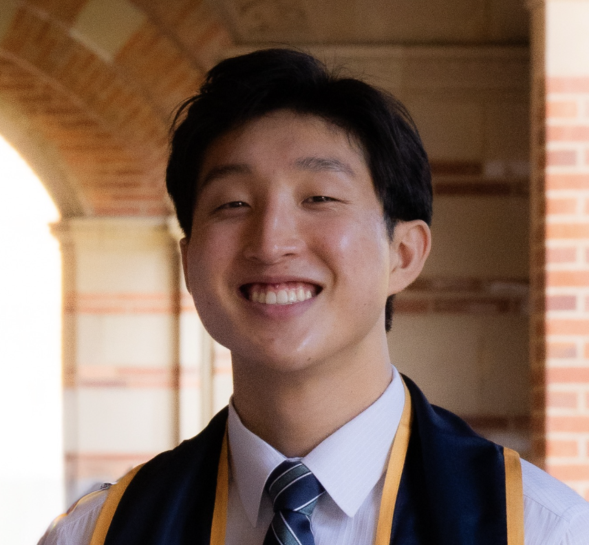

This course will cover basic principles for endowing mobile autonomous robots with planning, perception, and decision-making capabilities. Algorithmic approaches for trajectory optimization; robot motion planning; robot perception, localization, and simultaneous localization and mapping (SLAM); state machines. Extensive use of the Robot Operating System (ROS) for demonstrations and hands-on activities. Prerequisites: CS 106A or equivalent, CME 100 or equivalent (for calculus, linear algebra), and CME 106 or equivalent (for probability theory).
| Somil Bansal |
|---|
| Carlota Parés Morlans |
 Joseph Lee |
Aditya Kothari | Kabir Cheema |
|---|
Tue, Thu 1:30 PM - 2:50 PM at Skilling Auditorium
Students are expected to attend one 2-hour section each week. Details about lab signups will be posted Week 1.
For missing labs, please attend office hours to make up the lab and get checked off.
For urgent questions, email the staff mailing list at cs237a-aut2627-staff@lists.stanford.eduExams for this course will be in-person. The midterm exam will be in Week 6 of the course (details on the exam coverage will be announced in lecture). The final exam, also in-person, will be on Tuesday, December 8 from 3:30-6:30 PM (PST).
| Date | Topic | Homework | Lab |
|---|---|---|---|
| 09/22 | Course overview, perception-action loop, maps | Lab 0: Install ROS | |
| 09/24 | Maps, Robot geometry, Coordinate frames and SE(2)/SE(3) transforms | HW1 out | |
| 09/29 | Collision, C-space, motion models. Path planning I: A* | Lab 1: Command line, Git, Python | |
| 10/01 | Path planning II: RRT, RRT* | ||
| 10/06 | Trajectory optimization | Lab 2: ROS basics | |
| 10/08 | Trajectory following: PID, LQR, gain scheduled LQR | HW1 due, HW2 out | |
| 10/13 | Robotic sensors: IMU, lidar, cameras, RGB-D. Point clouds & ICP | Lab 3: RViz, Turtlebot | |
| 10/15 | Pinhole camera models, camera calibration | HW2 due, HW3 Out | |
| 10/20 | Structure from Motion (SfM), features, RANSAC | Lab 4: Heading controller | |
| 10/22 | Learning based perception, semantic perception | ||
| 10/27 | SLAM intro, factor graphs, Pose Graph Opt (PGO) | HW3 due | Lab 5: Nav to goal |
| 10/29 | Midterm (in-class) | ||
| 11/03 | No Lecture (Democracy Day) | HW4 out | |
| 11/05 | Pose Graph Opt, bundle adjustment | ||
| 11/10 | Bayes Rule, RVs, Occupancy mapping | Lab 6: Object detection | |
| 11/12 | Occupancy mapping, frontier exploration | HW4 due, HW5 out | |
| 11/17 | Gaussian RVs, Kalman Filtering, EKF, UKF | Lab 7: Frontier exploration | |
| 11/19 | Particle Filtering, Monte Carlo localization | ||
| 11/24 | No lecture (Thanksgiving) | ||
| 11/26 | No lecture (Thanksgiving) | ||
| 12/01 | EKF Localization, obj tracking | HW5 due | Lab 8: Makeup |
| 12/03 | Advanced Topics: Imitation learning, VLAs, 3DGS for sim2real, world models | ||
| 12/08 | Final Exam 3:30-6:30pm |
Follow this link to access the course website for the previous edition of Principle of Robot Autonomy I, Fall 2025.